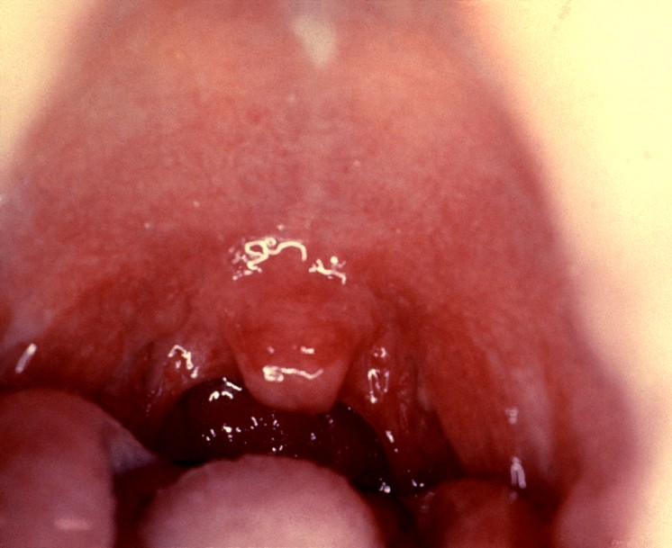
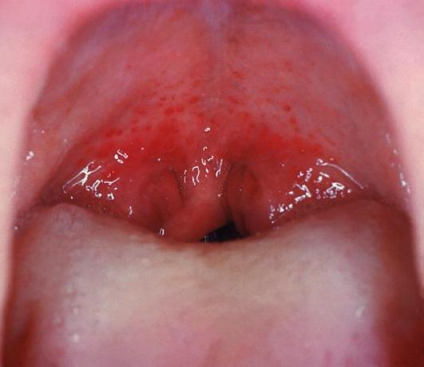
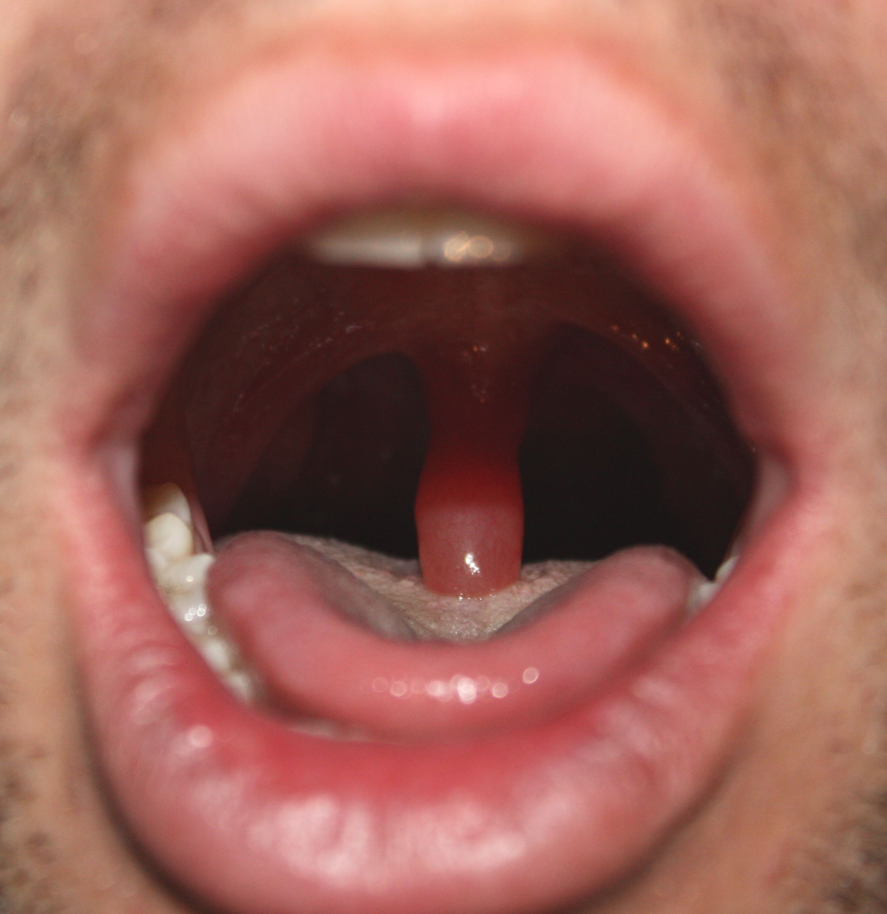
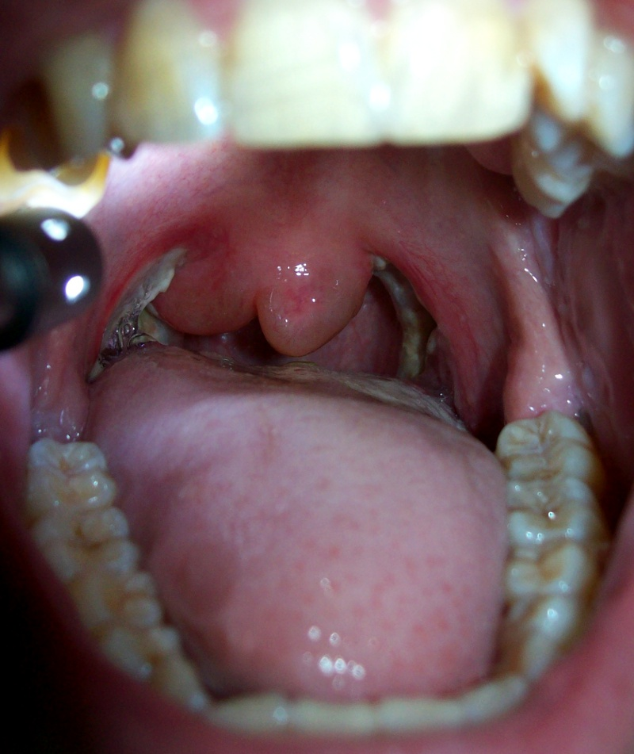
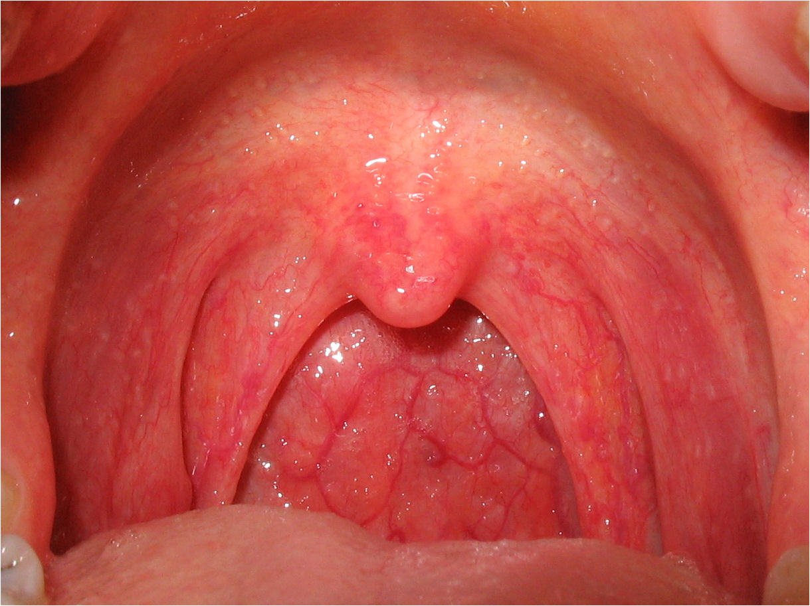
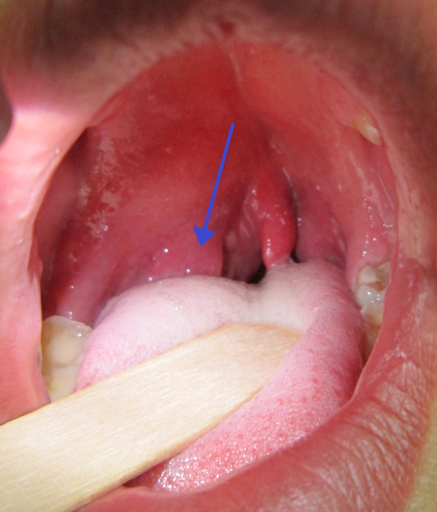

👁️ EXPLORACIÓN NEUROLÓGICA — PUPILAS
Configura el diámetro basal (mm) y la reactividad luminosa fotomotora de cada ojo antes de enviar la prueba a la tablet del alumno:
🗣️ EXPLORACIÓN DE GARGANTA & OROFARINGE (ORL)
Selecciona el hallazgo clínico orofaríngeo (úvula, pilares y amígdalas) para mostrar directamente en la tablet del alumno:

✅ Orofaringe y Úvula Normal
Úvula centrada, pilares simétricos sin exudado ni edema.

⚠️ Edema Úvula Leve (Uvulitis)
Úvula tumefacta con engrosamiento mucoso alérgico.

🔶 Edema Úvula Moderado
Úvula globulosa muy engrosada y pálida serosa.

🔴 Edema Severo (Quincke)
Gran úvula masivamente edematosa con estenosis del istmo.

🔥 Garganta Quemada / Térmica
Eritema intenso difuso con flictenas y exudado fibrinoso.

🩺 Absceso Periamigdalino
Abombamiento unilateral y desviación contralateral de úvula.
Seleccionado: Orofaringe y Úvula Normal
🩺 AUSCULTACIÓN CARDIOPULMONAR
Emite sonidos respiratorios o cardíacos de alta fidelidad por el monitor del alumno:
🫁 AUSCULTACIÓN PULMONAR (RESPIRATORIA):
❤️ AUSCULTACIÓN CARDÍACA:
Sonido activo en monitor: Ninguno
ELECTROCARDIOGRAMAS DE 12 DERIVACIONES
Selecciona y pulsa "Enviar a Tablet" cuando el alumno solicite realizar un ECG de 12 derivaciones al paciente.
CASOS CLÍNICOS DE EMERGENCIA
HISTORIAL DE ACCIONES DEL ALUMNO
Sesión de simulación iniciada. Sensores en espera de activación...
PANTALLA DEL ALUMNO EN TIEMPO REAL
Vista en directo del monitor del alumno. Pulsa el botón para solicitar captura de pantalla.
-- fps

Sin captura recibida aún.
Pulsa «Solicitar captura» o activa la captura continua.
Propiedad de Alberto Á. Garra